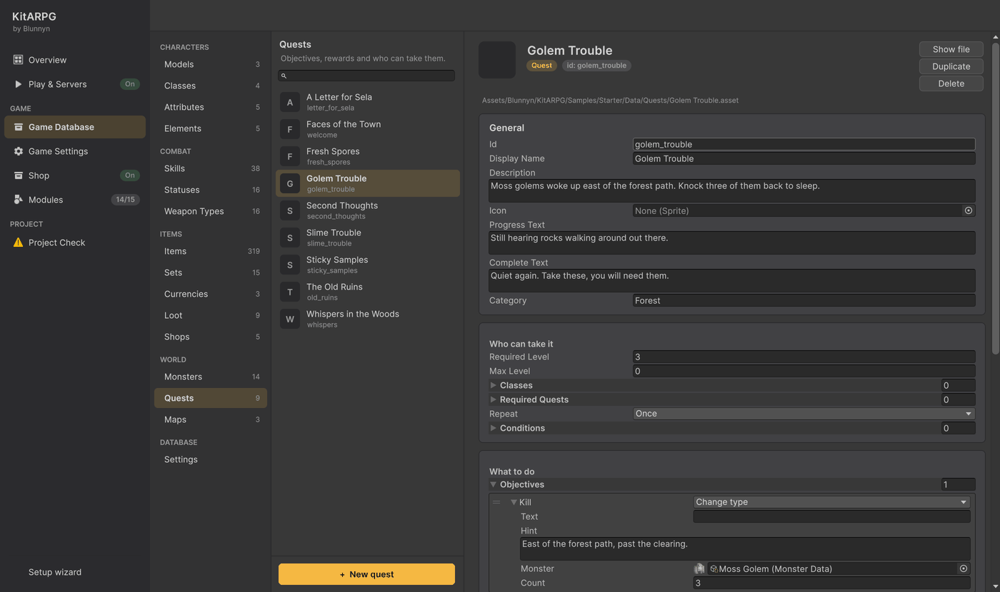
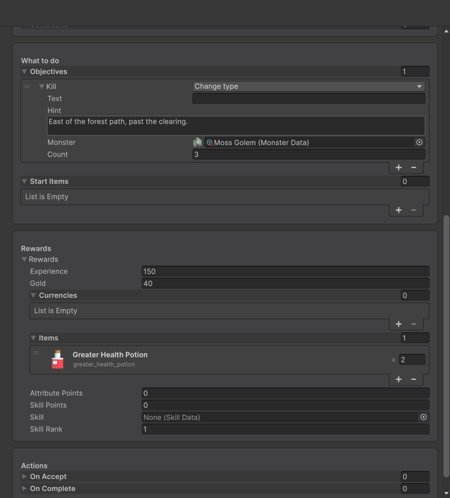
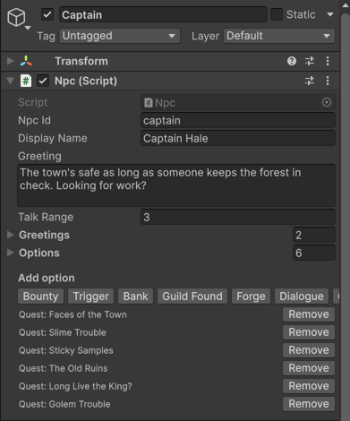
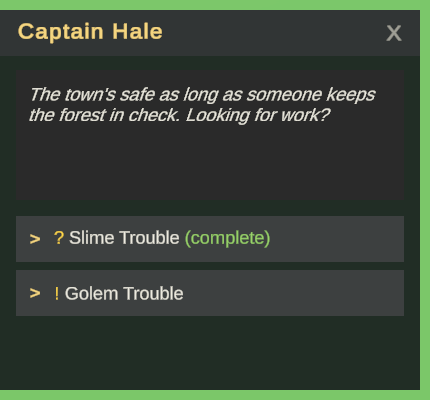
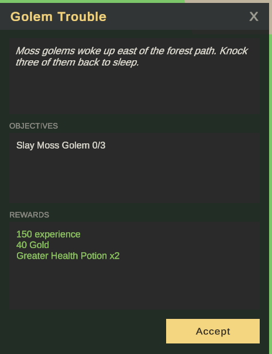
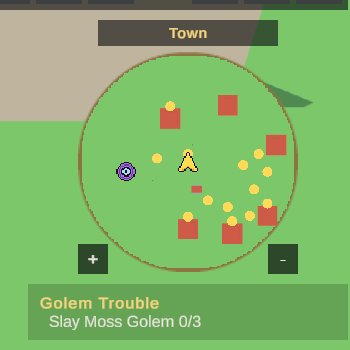

Step by step guides
Make a quest
This guide makes Golem Trouble: Captain Hale in town asks for three Moss Golems and pays with experience, gold and two Greater Health Potions. It uses the monster from Make a monster and the potion from Make a potion; any monster and item work the same.
1. Make the quest
- In Game Database, open World > Quests and press + New quest.
- Fill in the texts. Each one is what the NPC says at a moment of the quest:
| Field | Value |
|---|---|
| Id | golem_trouble |
| Display Name | Golem Trouble |
| Description | Moss golems woke up east of the forest path. Knock three of them back to sleep. (when offered) |
| Progress Text | Still hearing rocks walking around out there. (when talked to before it is done) |
| Complete Text | Quiet again. Take these, you will need them. (when turned in) |
| Category | Forest (its group in the quest log) |
- In Who can take it, set Required Level to 3. Leave Repeat on Once.

2. What to do and the rewards
- In What to do, open Objectives, press + and Pick a type > Kill. Set Monster to Moss Golem, Count to 3, and a Hint:
East of the forest path, past the clearing.The hint shows in the quest log under the objective. - In Rewards, set Experience 150 and Gold 40. Open Items, press + and pick the Greater Health Potion, amount 2.

Collect, Talk, Explore and Trigger are the other objectives; see Quests.
3. Give it to an NPC
- Open the
Townscene and select Captain in the Hierarchy. - On its Npc component, under Add option, press Quest. A new line appears in the options.
- Pick Golem Trouble in its Quest field. By default the same NPC offers it and takes it back.
- Save the scene.

4. Try it
- Press Play and enter the game with a character of level 3 or more.
- Talk to Captain Hale. A yellow "!" before the quest means it can be taken.
| The captain's options | The quest |
|---|---|
 |
 |
- Pick it and press Accept. The tracker under the minimap shows the objective.

- Kill three golems in the forest, come back and turn it in. The "?" turns yellow when it is ready.
GM commands for testing: /quest give golem_trouble takes it, /quest finish golem_trouble fills every objective, /quest reset golem_trouble forgets it.
Next steps
- Chains, dailies and quest drops: Quests.
- Conversations with choices: Dialogues.
- Requirements and actions that run on accept or completion: Conditions and actions.